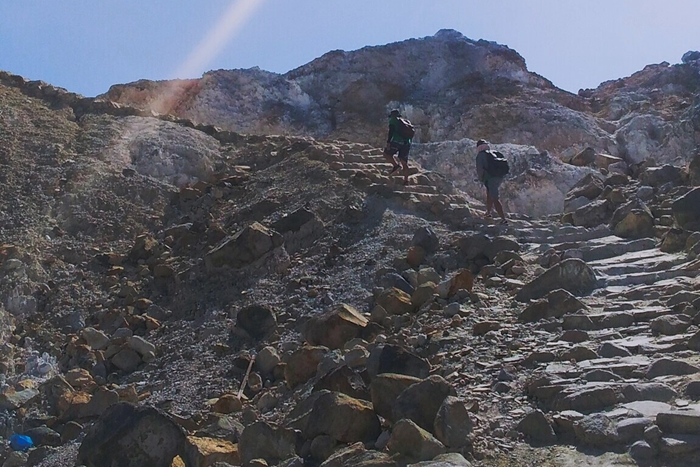
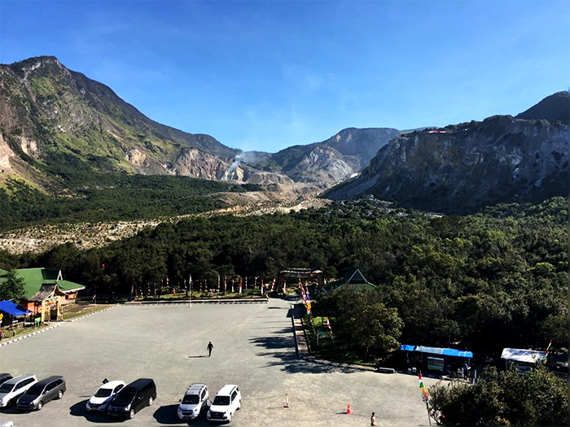
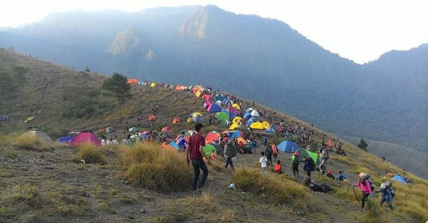

FIND ME ON :


Papandayan di Garut, Jawa Barat, dikenal kalangan pendaki sebagai gunung untuk mendaki tipis-tipis. Tapi jangan salah; Papandayan memiliki trek pendakian yang cukup menguras tenaga, udaranya dingin menusuk, dan dihiasi beberapa tanjakan yang cukup terjal.
Perjalanan kali ini saya menepati sebuah janji kepada seorang teman lama. Dia sudah sering sekali bilang ingin melihat langsung bunga edelweis. Pernah juga dia bertanya tentang Gunung Papandayan kepada saya. Akhirnya saja ajaklah dia ke sana.
Dia bekerja di sebuah kapal pesiar di luar negeri, jarang pulang ke Indonesia. Namun ia cinta keindahan alam dan budaya Indonesia. Saking cintanya, setiap kali pulang dia selalu mengajak saya untuk berkelana. Saya sudah beberapa kali berkelana ke mana-mana bersamanya. Tapi kali ini kami tidak hanya berdua (dua orang teman saya juga ikut bersama kami, jadi kami berempat semua perempuan) dan tujuan kami adalah gunung.
Perjalanan dimulai dari Terminal Lebak Bulus
Saya bersama dua orang teman berangkat dari Terminal Lebak Bulus. Teman saya yang bekerja di kapal pesiar itu berangkat langsung dari Cianjur. Kami menumpang Primajasa Lebak Bulus-Garut. Perjalanan kurang lebih empat jam dengan ongkos Rp 52.000. Busnya sangat nyaman dan tidak (dipaksakan untuk) penuh. Sepanjang perjalanan saya manfaatkan waktu untuk tidur.
Setiba di Terminal Guntur Garut pukul 18.13, kami pun beribadah salat magrib. Setelahnya kami berkemas dan membeli beberapa logistik yang kurang. Oleh karena teman-teman perempuan saya ini baru mencoba mendaki (teman saya yang bekerja di kapal pesiar itu sudah pernah trekking bersama saya ke Baduy Dalam) semua perlengkapan pendakian seperti tenda, nesting dan kompor, matras, dll. saya yang membawa dalam satu keril. Ransel teman-teman saya itu hanya untuk memuat logistik makanan. Setelah semuanya beres saya berikan sedikit arahan. Kemudian kami berdoa bersama sebelum cabut.
Untuk tiba di Papandayan kami harus naik omprengan dua kali lagi. Pertama kami naik Carry berkapasitas sepuluh orang (yang terkadang, kenyataannya, dinaiki sampai lima belas orang) dari Terminal Guntur ke Desa Cisurupan. Semua keril kami diikat di atas. Perjalanan itu kurang lebih 30 menit dengan ongkos Rp 20.000. Pemandangannya sangat indah dan jalannya berkelok-kelok. Di dalam angkot kami bertemu tujuh orang pendaki yang sama-sama berasal dari Jakarta. Akhirnya kami memutuskan untuk bareng terus.
Sesampai di Desa Cisurupan, kami pindah ke omprengan berupa mobil bak terbuka. Ongkosnya Rp 20.000 dan mengantarkan kami sampai pintu masuk Papandayan. Pukul 22.00 saat itu. Malam indah. Meskipun udara dingin cukup menusuk, langit bertaburan bintang. (Jaket saya tertinggal di kantor, lupa memasukkannya ke dalam tas yang sudah sangat penuh.) Saya suka sekali perjalanan menumpang mobil bak terbuka seperti ini, bersama teman-teman baru. Syahdu.
Pendakian malam itu
Sesampai di gerbang masuk, kami membayar tiket masuk Rp 30.000/orang dan tiket berkemah Rp.35.000/malam. Jadi totalnya adalah Rp.65.000/orang. Lumayan mahal, memang. Mobil pun menurunkan kami di Warung Teteh, warung kayu yang menjual berbagai jenis makanan dan minuman hangat. Saya, yang sudah merasa kedinginan hebat, segera memesan kopi hitam dan mi rebus cabe rawit.
Pukul 23.30 kami briefing dan berdoa bersama untuk memulai pendakian. Awalnya saya mau mulai mendaki keesokan paginya, mengingat dari kami berempat hanya saya yang tahu soal pendakian; saya akan kewalahan mem-back up ketiga teman perempuan saya ini. Alhamdulillah kami bertemu rombongan ini (5 laki-laki, 2 perempuan), jadi setidaknya ada laki-laki yang bisa diandalkan.
Trekking malam itu sangat menguras tenaga. Awal pendakian kami sudah disuguhi anak tangga berbatu menanjak curam. DI sebelah kirinya adalah kawah Gunung Papandayan. Mungkin karena saat itu malam dan kadar oksigen menipis, bau belerang sangat menyengat. Di awal cukup terasa capeknya. Trek selanjutnya landai berbatu, kemudian tanjakan-turunan—masih berbatu juga—dan jalan setapak yang sangat kecil sehingga kami harus jalan agak menyerong miring.
Saya mulai agak kecewa dengan teman yang bekerja di pelayaran itu. Dari awal dia sudah susah diatur; saat teman-teman lain istirahat minum, dia tidak. Alasannya: takut jika nanti dia jadi ingin buang air kecil. Saat trek mulai menanjak, tas miliknya dibanting, bahkan terkadang diseret. Ia mengeluh: capek. Tapi yang membuat geleng-geleng kepala adalah saat ia membuang air mineral 1,5 liter yang dibawanya (tiap orang saya suruh bawa satu botol). Alasannya: tasnya menjadi berat.
Tentulah berat. Airnya tidak diminum sama sekali olehnya. Tentulah juga dia merasa capek; tubuhnya kurang asupan cairan. Kalau sudah begini, bukan tak mungkin ujung-ujungnya dia akan menyusahkan orang lain. Saat ada kesempatan, saya akhirnya berhasil membujuknya untuk minum walaupun sedikit. Tapi—nasib—saya malah disalah-salahkan sebab tujuh menit setelah minum, saat kembali berjalan, perutnya kram.
Mendirikan tenda sendirian
Akhirnya kami tiba di lahan berkemah, titik untuk melihat matahari terbit. Beberapa tenda sudah berdiri. Ada tiga warung kecil yang menjual kayu, makanan, dan minuman. Papandayan ini memang sangat memanjakan pendaki.
Karena saat itu sudah pukul 02.00, sudah dini hari, dan udara semakin dingin (13 derajat Celsius), rombongan kami pun segera mencari lahan untuk mendirikan tenda. Sedihnya, karena teman-teman saya yang lain adalah pendaki pemula, saya mesti membangun tenda sendirian. Tak ada basa-basi sekadar menawarkan bantuan. Tak ada juga yang berinisiatif untuk menyalakan kompor untuk menghangatkan air. (Badan saya sudah menggigil karena jaket yang semestinya saya pakai ketinggalan di kantor.) Tapi akhirnya tenda berdiri juga.
Herannya, entah apa yang merasuki teman saya, pelayar itu, setelah tenda jadi ia terus saja mengeluh capek, dingin, pegal. Ya! Inilah mendaki. Kalau tidak mau capek dan pegal, pergi saja ke mall duduk manis dan minum kopi. Dari awal perjalanan saya sudah memberikan arahan dan memberi tahu bahwa tenda yang saya punya hanya cukup untuk dua sampai tiga orang saja. Sementara kami berempat. Tapi, saya akali bagaimana kami bisa tidur berempat dalam satu tenda. Saya pikir: pasti akan terasa hangat walaupun berdesakan.
Ujung-ujungnya, teman saya itu “rusuh” lagi. Dia terus meracau, merasa kakinya sakit, pegal, tak bisa diselonjorkan lurus. Karena ia mengeluh dan terus mengeluh, saya yang tak ingin terpancing emosi pergi ke luar, hanya membawa kain tenun sebagai penghangat. Saya jalan ke warung untuk membeli kopi dan menyantap mi rebus. Sayang sekali, logistik yang sudah berat-berat dibawa dari bawah tidak diolah.
Nongkrong di warung sampai jam 3 pagi
Tak lama teman saya yang lain, yang berasal dari bagian timur Indonesia, menghampiri saya dengan wajah merajuk. Saya bertanya, “Ada apa?” Ia lalu menceritakan apa yang terjadi di tenda. Teman saya, yang itu, sangat egois. Di dalam tenda ia terus saja meluruskan kaki, terus mengeluh bahwa ia sakit dan pegal. Dua orang teman saya yang lain sudah bilang bahwa tenda kita ini sempit sehingga kita harus berbagi posisi. Tapi tetap saja ia mengeluh. Tak tahan dengan keluhan-keluhan itu, teman dari Timur itu walkout juga dari tenda dan menghampiri saja yang sedang menghangatkan diri di depan api unggun.
Di sekitar api, kami berbincang dan bersenda gurau bersama para pendaki lain, bertukar pengalaman dan cerita, sampai tak terasa sudah jam 03.30 dini hari. Badan kami capek dan menggigil tak keruan. Waktunya mencari tempat enak untuk tidur. Tak berhasil menemukan posisi tidur enak, akhirnya kami kembali ke warung (yang kami tak tahu namanya itu).
Rasa lelah yang luar biasa membuat kami tanpa sadar tidur dalam posisi duduk di atas dingklik dengan kepala menempel di tanah di depan api unggun. Ibu sang pemilik warung memberi kami lima batang kayu besar agar api tidak padam. Biasanya kayu-kayu itu dijual Rp 50.000/kantong plasik, namun sang ibu memberikan pada kami cuma-cuma. Saat itu, api terasa seperti sahabat bagi kami.
Lalu, tiba-tiba terdengar sorak-sorai pemburu “sunrise.” Kami berdua langsung bangun dan berlari menuju titik untuk melihat sunrise. “Ya Allah, hamba butuh sekali hangatnya sinar matahari.” Setiba di titik untuk melihat matahari terbut, saya terpana—mengucap “subhanallah”—melihat keindahan pemandangan di depan mata: matahari yang perlahan beranjak naik, sinarnya yang perlahan hangat terasa, angin gunung yang berhembus segar, dan embun pagi yang berubah menjadi butiran es saking dinginnya udara. Emosi saya redam. Saya bahagia.
Pelajaran tentang memilih teman pendakian
Saya kembali ke tenda. Saya lihat kedua teman masih tertidur pulas. Gemas, namun saya berusaha untuk memendam emosi. Tapi akhirnya mereka bangun. Teman dari Indonesia bagian timur bilang: “Kak Fidha badannya sudah panas sekali. Gantian tidur, ya.” Mereka akhirnya keluar tenda.
Saya berharap mereka masih ada niat baik, entah sekadar berbasa-basi atau langsung membuatkan minuman hangat dan makanan. Nyatanya tidak. Tanpa merasa berdosa mereka “selfa-selfi” depan tenda. Lagi-lagi saya mencoba meredam emosi. Mereka lalu pergi ke hutan mati. Berselimutkan kantong tidur, saya masak makanan dan minuman panas sendiri. Setelah badan cukup hangat, saya minum parasetamol untuk menurunkan demam, saya lilitkan selendang ke tubuh, saya tumpuk dengan tas, lalu tidur.
Pukul 12.30 kami berkemas. Lagi-lagi tenda saya bereskan sendiri. Beberapa teman baru saya sudah turun terlebih dulu. Selama perjalanan turun yang saya rasa adalah pusing, lemas, dan mata panas. Saya coba menguatkan diri, setidaknya sampai base camp. Di Pos 1 dekat kawah saya sudah mulai drop, jalan sudah tak keruan. Pukul 15.30 tiba di base camp lalu segera naik angkutan bak terbuka.
Sepulang dari Papandayan, saya jadi sadar bahwa gunung ternyata bisa menyibak sifat, sikap, dan karakter seseorang. Saya juga jadi menyaksikan sendiri bahwa hati manusia itu mudah dibolak-balikkan; sekarang baik belum tentu besok, begitu pun sebaliknya. Selain itu saja juga jadi paham kenapa pendaki gunung harus jauh dari sifat egois; egoisme kita mungkin saja bisa membunuh orang lain.
Pilih-pilih teman itu memang tidak baik. Namun, pengalaman saya di Papandayan mengajarkan bahwa dalam konteks naik gunung ada pengecualian. Memilih teman pendakian itu wajib dan harus; kita, para pendaki, pasti butuh tim yang solid.
Papandayan dan Pelajaran untuk Lebih Bijak Memilih Teman Pendakian
 Gagal ke Puncak Lawu, Pulang Membawa Banyak “Cerita”
Gagal ke Puncak Lawu, Pulang Membawa Banyak “Cerita”
 Inilah 7 Tumbuhan yang Bisa Dimakan di Gunung dan Hutan
Inilah 7 Tumbuhan yang Bisa Dimakan di Gunung dan Hutan